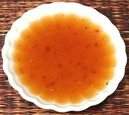

 |
Quick Dipping SauceThailand / California | ||||
| Makes: Effort: Sched: DoAhead: |
1 cup * 5 min Yes |
A light but tasty dipping sauce, quick and easy. For spring rolls double the amount of sugar. The amount of chili garlic sauce given is enough to get noticed, but not real hot (by Thai and SoCal standards) - feel free to adjust. | |||
| Yes, Eagle Eye, that's a fleck of cilantro in the upper right, left from a previous sauce made in the same bowl. Actually, a tablespoon or two of finely chopped cilantro wouldn't hurt this sauce at all. | |||||
|
|
1/4 1/4 1/4 1/4 1-1/2 1 |
c c c c T T |
Lime Juice Fish Sauce Rice Vinegar Water Chili Garlic Sauce (1) Sugar (2) |
Make - (5 min)
|